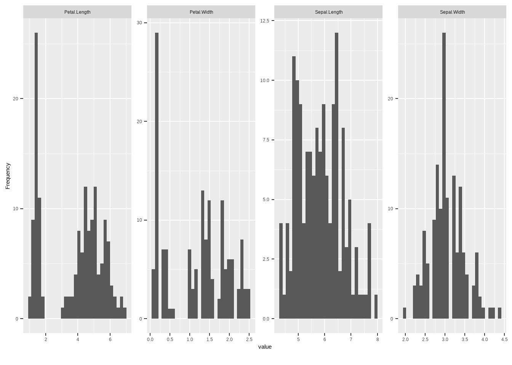

Chapter 4 Data Analysis in R
While you’re waiting to for your data from Shauna (remember to send you experiment design to Shauna so that she can create some data for you), lets practice basic data analysis in R with some pre-loaded datasets.
The tutorials that follow aren’t meant to teach you statistics, you have Dr. Emond and probably a textbook for that. Instead, I will teach you how to conduct the analyses you’ve learned about in R rather than SPSS. Refer to your textbook or other online resources for the underlying theory.
I recommend following along with the tutorial in a basic R markdown document. See the R Markdown section if you don’t remember how to start a new document. Hint, File –> New File –> R Markdown –> Click Okay then Save via the little disk icon above. Name it something like Practice 1.
To code alongside the tutorial you can copy and paste the code found below into the codechunk sof your practice Markdown document. Feel free to play around, rename variables and explore. Making mistakes is the best way to learn.
4.1 Describing Data
The Dirty Data Theorem states that “real world” data tends to come from bizarre and unspecifiable distributions of highly correlated variables and have unequal sample sizes, missing data points, non-independent observations, and an indeterminate number of inaccurately recorded values. — Unknown, Statistically Speaking, p. 282.
The first step before analyzing any new dataset is to describe and visualize it.
You will use the commands in this section to add a summary table and histogram of your outcome variable to your final document. I will list each step needed to add a histogram to your final paper in the “Putting it all Together” tutorial at the very end.
First, lets practice.
Let’s start by loading the iris data frame and storing it in an object we’ll call df.
Let’s imagine we got this data by measuring the petals and stamens of 4 species of flowers behind our house. We’re hoping we can learn something about the relationship between the species and petal/stamen size. Let’s take a look at the data:
## Sepal.Length Sepal.Width Petal.Length Petal.Width Species
## 1 5.1 3.5 1.4 0.2 setosa
## 2 4.9 3.0 1.4 0.2 setosa
## 3 4.7 3.2 1.3 0.2 setosa
## 4 4.6 3.1 1.5 0.2 setosa
## 5 5.0 3.6 1.4 0.2 setosa
## 6 5.4 3.9 1.7 0.4 setosa
## 7 4.6 3.4 1.4 0.3 setosa
## 8 5.0 3.4 1.5 0.2 setosa
## 9 4.4 2.9 1.4 0.2 setosa
## 10 4.9 3.1 1.5 0.1 setosa
## 11 5.4 3.7 1.5 0.2 setosa
## 12 4.8 3.4 1.6 0.2 setosa
## 13 4.8 3.0 1.4 0.1 setosa
## 14 4.3 3.0 1.1 0.1 setosa
## 15 5.8 4.0 1.2 0.2 setosa
## 16 5.7 4.4 1.5 0.4 setosa
## 17 5.4 3.9 1.3 0.4 setosa
## 18 5.1 3.5 1.4 0.3 setosa
## 19 5.7 3.8 1.7 0.3 setosa
## 20 5.1 3.8 1.5 0.3 setosa
## 21 5.4 3.4 1.7 0.2 setosa
## 22 5.1 3.7 1.5 0.4 setosa
## 23 4.6 3.6 1.0 0.2 setosa
## 24 5.1 3.3 1.7 0.5 setosa
## 25 4.8 3.4 1.9 0.2 setosa
## 26 5.0 3.0 1.6 0.2 setosa
## 27 5.0 3.4 1.6 0.4 setosa
## 28 5.2 3.5 1.5 0.2 setosa
## 29 5.2 3.4 1.4 0.2 setosa
## 30 4.7 3.2 1.6 0.2 setosa
## 31 4.8 3.1 1.6 0.2 setosa
## 32 5.4 3.4 1.5 0.4 setosa
## 33 5.2 4.1 1.5 0.1 setosa
## 34 5.5 4.2 1.4 0.2 setosa
## 35 4.9 3.1 1.5 0.2 setosa
## 36 5.0 3.2 1.2 0.2 setosa
## 37 5.5 3.5 1.3 0.2 setosa
## 38 4.9 3.6 1.4 0.1 setosa
## 39 4.4 3.0 1.3 0.2 setosa
## 40 5.1 3.4 1.5 0.2 setosa
## 41 5.0 3.5 1.3 0.3 setosa
## 42 4.5 2.3 1.3 0.3 setosa
## 43 4.4 3.2 1.3 0.2 setosa
## 44 5.0 3.5 1.6 0.6 setosa
## 45 5.1 3.8 1.9 0.4 setosa
## 46 4.8 3.0 1.4 0.3 setosa
## 47 5.1 3.8 1.6 0.2 setosa
## 48 4.6 3.2 1.4 0.2 setosa
## 49 5.3 3.7 1.5 0.2 setosa
## 50 5.0 3.3 1.4 0.2 setosa
## 51 7.0 3.2 4.7 1.4 versicolor
## 52 6.4 3.2 4.5 1.5 versicolor
## 53 6.9 3.1 4.9 1.5 versicolor
## 54 5.5 2.3 4.0 1.3 versicolor
## 55 6.5 2.8 4.6 1.5 versicolor
## 56 5.7 2.8 4.5 1.3 versicolor
## 57 6.3 3.3 4.7 1.6 versicolor
## 58 4.9 2.4 3.3 1.0 versicolor
## 59 6.6 2.9 4.6 1.3 versicolor
## 60 5.2 2.7 3.9 1.4 versicolor
## 61 5.0 2.0 3.5 1.0 versicolor
## 62 5.9 3.0 4.2 1.5 versicolor
## 63 6.0 2.2 4.0 1.0 versicolor
## 64 6.1 2.9 4.7 1.4 versicolor
## 65 5.6 2.9 3.6 1.3 versicolor
## 66 6.7 3.1 4.4 1.4 versicolor
## 67 5.6 3.0 4.5 1.5 versicolor
## 68 5.8 2.7 4.1 1.0 versicolor
## 69 6.2 2.2 4.5 1.5 versicolor
## 70 5.6 2.5 3.9 1.1 versicolor
## 71 5.9 3.2 4.8 1.8 versicolor
## 72 6.1 2.8 4.0 1.3 versicolor
## 73 6.3 2.5 4.9 1.5 versicolor
## 74 6.1 2.8 4.7 1.2 versicolor
## 75 6.4 2.9 4.3 1.3 versicolor
## 76 6.6 3.0 4.4 1.4 versicolor
## 77 6.8 2.8 4.8 1.4 versicolor
## 78 6.7 3.0 5.0 1.7 versicolor
## 79 6.0 2.9 4.5 1.5 versicolor
## 80 5.7 2.6 3.5 1.0 versicolor
## 81 5.5 2.4 3.8 1.1 versicolor
## 82 5.5 2.4 3.7 1.0 versicolor
## 83 5.8 2.7 3.9 1.2 versicolor
## 84 6.0 2.7 5.1 1.6 versicolor
## 85 5.4 3.0 4.5 1.5 versicolor
## 86 6.0 3.4 4.5 1.6 versicolor
## 87 6.7 3.1 4.7 1.5 versicolor
## 88 6.3 2.3 4.4 1.3 versicolor
## 89 5.6 3.0 4.1 1.3 versicolor
## 90 5.5 2.5 4.0 1.3 versicolor
## 91 5.5 2.6 4.4 1.2 versicolor
## 92 6.1 3.0 4.6 1.4 versicolor
## 93 5.8 2.6 4.0 1.2 versicolor
## 94 5.0 2.3 3.3 1.0 versicolor
## 95 5.6 2.7 4.2 1.3 versicolor
## 96 5.7 3.0 4.2 1.2 versicolor
## 97 5.7 2.9 4.2 1.3 versicolor
## 98 6.2 2.9 4.3 1.3 versicolor
## 99 5.1 2.5 3.0 1.1 versicolor
## 100 5.7 2.8 4.1 1.3 versicolor
## 101 6.3 3.3 6.0 2.5 virginica
## 102 5.8 2.7 5.1 1.9 virginica
## 103 7.1 3.0 5.9 2.1 virginica
## 104 6.3 2.9 5.6 1.8 virginica
## 105 6.5 3.0 5.8 2.2 virginica
## 106 7.6 3.0 6.6 2.1 virginica
## 107 4.9 2.5 4.5 1.7 virginica
## 108 7.3 2.9 6.3 1.8 virginica
## 109 6.7 2.5 5.8 1.8 virginica
## 110 7.2 3.6 6.1 2.5 virginica
## 111 6.5 3.2 5.1 2.0 virginica
## 112 6.4 2.7 5.3 1.9 virginica
## 113 6.8 3.0 5.5 2.1 virginica
## 114 5.7 2.5 5.0 2.0 virginica
## 115 5.8 2.8 5.1 2.4 virginica
## 116 6.4 3.2 5.3 2.3 virginica
## 117 6.5 3.0 5.5 1.8 virginica
## 118 7.7 3.8 6.7 2.2 virginica
## 119 7.7 2.6 6.9 2.3 virginica
## 120 6.0 2.2 5.0 1.5 virginica
## 121 6.9 3.2 5.7 2.3 virginica
## 122 5.6 2.8 4.9 2.0 virginica
## 123 7.7 2.8 6.7 2.0 virginica
## 124 6.3 2.7 4.9 1.8 virginica
## 125 6.7 3.3 5.7 2.1 virginica
## 126 7.2 3.2 6.0 1.8 virginica
## 127 6.2 2.8 4.8 1.8 virginica
## 128 6.1 3.0 4.9 1.8 virginica
## 129 6.4 2.8 5.6 2.1 virginica
## 130 7.2 3.0 5.8 1.6 virginica
## 131 7.4 2.8 6.1 1.9 virginica
## 132 7.9 3.8 6.4 2.0 virginica
## 133 6.4 2.8 5.6 2.2 virginica
## 134 6.3 2.8 5.1 1.5 virginica
## 135 6.1 2.6 5.6 1.4 virginica
## 136 7.7 3.0 6.1 2.3 virginica
## 137 6.3 3.4 5.6 2.4 virginica
## 138 6.4 3.1 5.5 1.8 virginica
## 139 6.0 3.0 4.8 1.8 virginica
## 140 6.9 3.1 5.4 2.1 virginica
## 141 6.7 3.1 5.6 2.4 virginica
## 142 6.9 3.1 5.1 2.3 virginica
## 143 5.8 2.7 5.1 1.9 virginica
## 144 6.8 3.2 5.9 2.3 virginica
## 145 6.7 3.3 5.7 2.5 virginica
## 146 6.7 3.0 5.2 2.3 virginica
## 147 6.3 2.5 5.0 1.9 virginica
## 148 6.5 3.0 5.2 2.0 virginica
## 149 6.2 3.4 5.4 2.3 virginica
## 150 5.9 3.0 5.1 1.8 virginicaWoah, kinda messy. Do these strings of numbers tell us anything about the flowers we just measured? Not really. It just gives me a headache. What we need to do is describe the data.
There are a wide variety of measures that one might want to calculate here. Means, medians, ranges, quartiles, standard deviations, skewness, etc. There are too many of these functions to cover in this tutorial, so let’s discuss the most common statistics that you will need to report.
mean()calculates the arithmetic mean.median()calculates the median;min()andmax()are the minimum and maximum;sd()calculates the standard deviation (andvar()computes the variance)psych::skew()andpsych::kurtosi()compute skewness and kurtosis respectively
Instead of using these commands individually, the describe command from the Psych package will allow us to see the mean, standard deviation, range and skewness of our data all at once.
descriptives <- psych::describe(df) # create an object to hold the output of the describe function
descriptives # this calls the object we just made## vars n mean sd median trimmed mad min max range skew
## Sepal.Length 1 150 5.84 0.83 5.80 5.81 1.04 4.3 7.9 3.6 0.31
## Sepal.Width 2 150 3.06 0.44 3.00 3.04 0.44 2.0 4.4 2.4 0.31
## Petal.Length 3 150 3.76 1.77 4.35 3.76 1.85 1.0 6.9 5.9 -0.27
## Petal.Width 4 150 1.20 0.76 1.30 1.18 1.04 0.1 2.5 2.4 -0.10
## Species* 5 150 2.00 0.82 2.00 2.00 1.48 1.0 3.0 2.0 0.00
## kurtosis se
## Sepal.Length -0.61 0.07
## Sepal.Width 0.14 0.04
## Petal.Length -1.42 0.14
## Petal.Width -1.36 0.06
## Species* -1.52 0.07From the output you can see our df contains 5 variables: 4 sepal measurements that are continuous and a species variable that seems to be a categorical variable (note the asterix denoting its a nominal variable) with 3 levels
If we wanted to calculate the mean of just one variable, let’s say Sepal Width we would call the specific variable.
4.1.0.1 Calling single variables
In R, a variable name is composed of two parts:
The prefix (which tells R what dataframe the variable is in) - df in our case
The variable name (the exact name the variable has in our df) - Sepal.Length in our case. If you forget the names of the variables in the dataframe you can always quickly use the names command for a list of all variables.
## [1] "Sepal.Length" "Sepal.Width" "Petal.Length" "Petal.Width" "Species"To call an individual variable we need to tell R where to find it. The three parts are:
df (the address dataframe) $ (a connector that tells us R that we want the specific variable name that follows) Sepal.Length (the name of our variable)
Lets put it all together: df$Sepal.Length
These are the individual commands for mean, median and standard deviation.
## [1] 3.057333## [1] 3## [1] 0.4358663In the Environment pane of your workspace (to the right), you will see the objects you create. You can click on them or hover over them here to open them or obtain more information about them. Its especially handy to view large datasets as it will open a sortable version of the df in a new tab in the workspace.
4.1.1 Descriptive Table
For a prettier descriptive table of all the continuous variables in your df including little histograms:
summary <- datasummary_skim(df) # a function that shows some descriptives of the numerical data in your df
summary # now call the object| Unique (#) | Missing (%) | Mean | SD | Min | Median | Max | ||
|---|---|---|---|---|---|---|---|---|
| Sepal.Length | 35 | 0 | 5.8 | 0.8 | 4.3 | 5.8 | 7.9 | |
| Sepal.Width | 23 | 0 | 3.1 | 0.4 | 2.0 | 3.0 | 4.4 | |
| Petal.Length | 43 | 0 | 3.8 | 1.8 | 1.0 | 4.3 | 6.9 | |
| Petal.Width | 22 | 0 | 1.2 | 0.8 | 0.1 | 1.3 | 2.5 |
To summarise the categorical variable in our dataset we can add the type = “categorical” function to our original command.
datasummary_skim(df, type = "categorical") # same command, but here we look at the frequencies of our categorical variable Species | Species | N | % |
|---|---|---|
| setosa | 50 | 33.3 |
| versicolor | 50 | 33.3 |
| virginica | 50 | 33.3 |
Cute! We see that 3 species of flowers were sampled. 50 measurements were conducted on each flower giving us a total sample size of 150. This matches the count we saw in our descriptives table.
To put it all in one table we could try this:
# this command says we want the datasummary function to compute the mean and sd for
# all continuous variables in the df dataframe by species
datasummary(Species * (All(df)) ~ Mean + SD, data=df, output='markdown')| Species | Mean | SD | |
|---|---|---|---|
| setosa | Sepal.Length | 5.01 | 0.35 |
| Sepal.Width | 3.43 | 0.38 | |
| Petal.Length | 1.46 | 0.17 | |
| Petal.Width | 0.25 | 0.11 | |
| versicolor | Sepal.Length | 5.94 | 0.52 |
| Sepal.Width | 2.77 | 0.31 | |
| Petal.Length | 4.26 | 0.47 | |
| Petal.Width | 1.33 | 0.20 | |
| virginica | Sepal.Length | 6.59 | 0.64 |
| Sepal.Width | 2.97 | 0.32 | |
| Petal.Length | 5.55 | 0.55 | |
| Petal.Width | 2.03 | 0.27 |
Now we can see the overall means of each continuous variable across species
What if we want to see the distribution of each measure between species?
4.1.2 Histograms
The next step after computing some descriptive statistics, is to visualize our data.
To see a histogram of all the continuous variables in the dataframe use the plot_histogram function from the DataExplorer package.
Histograms are a great way to check your outcome variable for normality. Remember, most statistical tests have a set of assumptions that if violated, make the results of the tests unreliable.

The histograms tell us a few things:
Petal length & Petal width measurements do NOT follow a normal distribution. They look bimodal, meaning there are two distributions in one. Some petals are really short and some are medium to long with a gap in between. We would have trouble modeling this if it were our outcome variable–lucky for us its not!
Our outcome variable (sepal length and width) seems relatively normal.

Lovely! Similarly, we could look at sepal width:
Here’s a fancier grouped histogram. It allows us to see the distribution of sepal length across the species factor. This allows us to see where sepal length overlaps and where it does not. From the grouped histogram we can see that the flower with shortest sepals are Setosa flowers while the longest sepals belong to the Versicolor species.
p <- df %>%
ggplot( aes(x=Sepal.Length, fill=Species)) +
geom_histogram(color="#e9ecef", alpha=0.6, position = 'identity') +
labs(fill="")
p## `stat_bin()` using `bins = 30`. Pick better value with `binwidth`.You will add a histogram of your outcome variable to your final document. You’ll use the data I give you (based on your research design) instead of the iris dataset.
Remember: R is case sensitive, so if you dont type the names of variables and objects exactly as they appear in your dataframe, R will scream at you!
4.1.3 Correlations
We might also look at correlations to see if there are underlying relationships we need to consider:
On quick glance, we can see that sepal length is positively correlated with the Species Virginca (r = .64), meaning that long sepal lengths are more likely in Virginica flowers than Setosa, where sepal length is negatively correlated which suggests a shorter sepal length. This concurs with the histograms we just looked at.
There is a lot more interesting stuff in the correlation matrix, but to avoid confusion let’s move on. Just know that you can build these matrices in R if you ever need one in future.
4.1.4 Boxplots
Before we run an Anova or a linear regression, let’s visualize the empirical differences between groups. For this data, a boxplot is our best bet.
We’ll use the ggplot package.
library(ggthemes)
p <- df %>% # we call our dataframe and tell it to put the output in an object called p
group_by(Species)%>% # we want to group our data by our categorical variable
ggplot(aes(x=Species, y=Sepal.Length))+ # here we tell ggplot what we want on our x and y axis
geom_boxplot(stat="boxplot") # here we tell is that we want a boxplot
p # now we call the object we just made
Figure 4.1: My pretty boxplot
Let’s make it more colourful
p + geom_boxplot(stat="boxplot", aes(fill=Species))+ # here we modify the code a little to make the plot colourful
scale_fill_manual(values = c("#00AFBB", "#E7B800", "#FC4E07")) # here we add our colous with RGB codesFigure 4.2: My prettier boxplot
What about a title and a proper name for the y axis?
p + geom_boxplot(stat="boxplot", aes(fill=Species))+
scale_fill_manual(values = c("#00AFBB", "#E7B800", "#FC4E07")) +
ylab("Sepal Length (cms)")+ # here we add a label to the y axis
ggtitle("Sepal length by species") # here we add a titleFigure 4.3: The prettiest boxplot ever made
Almost there–now let’s format it APA style
p + geom_boxplot(stat="boxplot", aes(fill=Species))+
scale_fill_manual(values = c("#00AFBB", "#E7B800", "#FC4E07")) +
ylab("Sepal Length (cms)")+ # here we add a label to the y axis
ggtitle("Sepal length by species")+ # here we add a title
theme_classic() # this changes the theme (notice the grey background is gone)Figure 4.4: The prettiest boxplot in the world
Obviously there is so much more we can do here, but let’s keep it simple for now.
4.2 Statistical Tests
4.2.1 T-Tests
# To run a t-test, our grouping variable can only have two levels, while Species has 4, so we;re just going to look at the difference between two levels
df2 <- df %>% filter(Species=="setosa"|Species=="versicolor") %>% droplevels()
results <- t.test(Sepal.Length ~ Species, data = df2)
results##
## Welch Two Sample t-test
##
## data: Sepal.Length by Species
## t = -10.521, df = 86.538, p-value < 2.2e-16
## alternative hypothesis: true difference in means between group setosa and group versicolor is not equal to 0
## 95 percent confidence interval:
## -1.1057074 -0.7542926
## sample estimates:
## mean in group setosa mean in group versicolor
## 5.006 5.9364.2.2 One-Way ANOVA
Assumptions
The ANOVA test makes the following assumptions about the data:
- Independence of the observations. Each subject should belong to only one group. There is no relationship between the observations in each group. Having repeated measures for the same participants is not allowed.
- No significant outliers in any cell of the design
- Normality. the data for each design cell should be approximately normally distributed.
- Homogeneity of variances. The variance of the outcome variable should be equal in every cell of the design.
Before computing ANOVA test, you need to perform some preliminary tests to check if the assumptions are met.
Note that, if the above assumptions are not met there are a non-parametric alternative (Kruskal-Wallis test) to the one-way ANOVA.
Unfortunately, there are no non-parametric alternatives to the two-way and the three-way ANOVA. Thus, in the situation where the assumptions are not met, you could consider running the two-way/three-way ANOVA on the transformed and non-transformed data to see if there are any meaningful differences.
If both tests lead you to the same conclusions, you might not choose to transform the outcome variable and carry on with the two-way/three-way ANOVA on the original data.
It’s also possible to perform robust ANOVA test using the WRS2 R package.
No matter your choice, you should report what you did in your results.
Load required packages:
Your first steps would be to calculate the mean and sd generally and within each group, but we did that above. Now we’ll check our assumptions.
4.2.2.1 Outliers
## # A tibble: 5 × 7
## Species Sepal.Length Sepal.Width Petal.Length Petal.Width is.outlier
## <fct> <dbl> <dbl> <dbl> <dbl> <lgl>
## 1 setosa 5.7 4.4 1.5 0.4 TRUE
## 2 setosa 4.5 2.3 1.3 0.3 TRUE
## 3 virginica 7.7 3.8 6.7 2.2 TRUE
## 4 virginica 6 2.2 5 1.5 TRUE
## 5 virginica 7.9 3.8 6.4 2 TRUE
## # ℹ 1 more variable: is.extreme <lgl>We do have some outliers, so we’ll conduct a robust ANOVA (rather than removing the outliers which is often frowned upon).
The normality assumption can be checked by using one of the following two approaches:
- Analyzing the ANOVA model residuals to check the normality for all groups together. This approach is easier and it’s very handy when you have many groups or if there are few data points per group.
- Check normality for each group separately. This approach might be used when you have only a few groups and many data points per group.
4.2.2.2 Check normality
Check normality assumption by analyzing the model residuals. QQ plot and Shapiro-Wilk test of normality are used. QQ plot draws the correlation between a given data and the normal distribution.
# Build the linear model
model <- lm(Sepal.Length ~ Species, data = df)
# Create a QQ plot of residuals
ggqqplot(residuals(model))
## # A tibble: 1 × 3
## variable statistic p.value
## <chr> <dbl> <dbl>
## 1 residuals(model) 0.988 0.219In the QQ plot, as all the points fall approximately along the reference line, we can assume normality. This conclusion is supported by the Shapiro-Wilk test. The p-value is not significant (p = 0.13), so we can assume normality.
Check normality assumption by groups. Computing Shapiro-Wilk test for each group level. If the data is normally distributed, the p-value should be greater than 0.05.
4.2.2.3 Homogneity of variance assumption
We’ll use a levene’s test
## # A tibble: 1 × 4
## df1 df2 statistic p
## <int> <int> <dbl> <dbl>
## 1 2 147 6.35 0.00226Unfortunately, we have a p value < .05 so we have a significant difference in variance between groups.
In a situation where the homogeneity of variance assumption is not met, you can compute the Welch one-way ANOVA test using the function welch_anova_test()[rstatix package]. This test does not require the assumption of equal variances.
4.2.2.4 Run the anova
## ANOVA Table (type II tests)
##
## Effect DFn DFd F p p<.05 ges
## 1 Species 2 147 119.265 1.67e-31 * 0.6194.2.2.5 Post Hoc Tests
## # A tibble: 3 × 9
## term group1 group2 null.value estimate conf.low conf.high p.adj
## * <chr> <chr> <chr> <dbl> <dbl> <dbl> <dbl> <dbl>
## 1 Species setosa versicolor 0 0.93 0.686 1.17 3.39e-14
## 2 Species setosa virginica 0 1.58 1.34 1.83 3 e-15
## 3 Species versicolor virginica 0 0.652 0.408 0.896 8.29e- 9
## # ℹ 1 more variable: p.adj.signif <chr>The output contains the following columns:
estimate: estimate of the difference between means of the two groups conf.low, conf.high: the lower and the upper end point of the confidence interval at 95% (default) p.adj: p-value after adjustment for the multiple comparisons.
4.2.2.6 Reporting the results
We could report the results of one-way ANOVA as follows:
A one-way ANOVA was performed to evaluate if sepal length was different across the 3 different species: Setosa (n = 50), Versicolor (n = 50) and Verginica (n = 50).
Sepal length was significantly different between species, F(2, 147) = 119.27, p<.001, eta squared = .62.
4.2.3 Visualize Results
# Visualization: box plots with p-values
pwc <- pwc %>% add_xy_position(x = "Species")
ggboxplot(df, x = "Species", y = "Sepal.Length") +
stat_pvalue_manual(pwc, hide.ns = TRUE) +
labs(
subtitle = get_test_label(res.aov, detailed = TRUE),
caption = get_pwc_label(pwc)
)
Remember our violation of homogeneity of variance? Let’s try the Welch’s one way test which is the alternative to the one-way ANOVA when variances are not equal.
# Welch One way ANOVA test
res.aov2 <- df %>% welch_anova_test(Sepal.Length ~ Species)
# Pairwise comparisons (Games-Howell)
pwc2 <- df %>% games_howell_test(Sepal.Length ~ Species)
res.aov2## # A tibble: 1 × 7
## .y. n statistic DFn DFd p method
## * <chr> <int> <dbl> <dbl> <dbl> <dbl> <chr>
## 1 Sepal.Length 150 139. 2 92.2 1.51e-28 Welch ANOVA